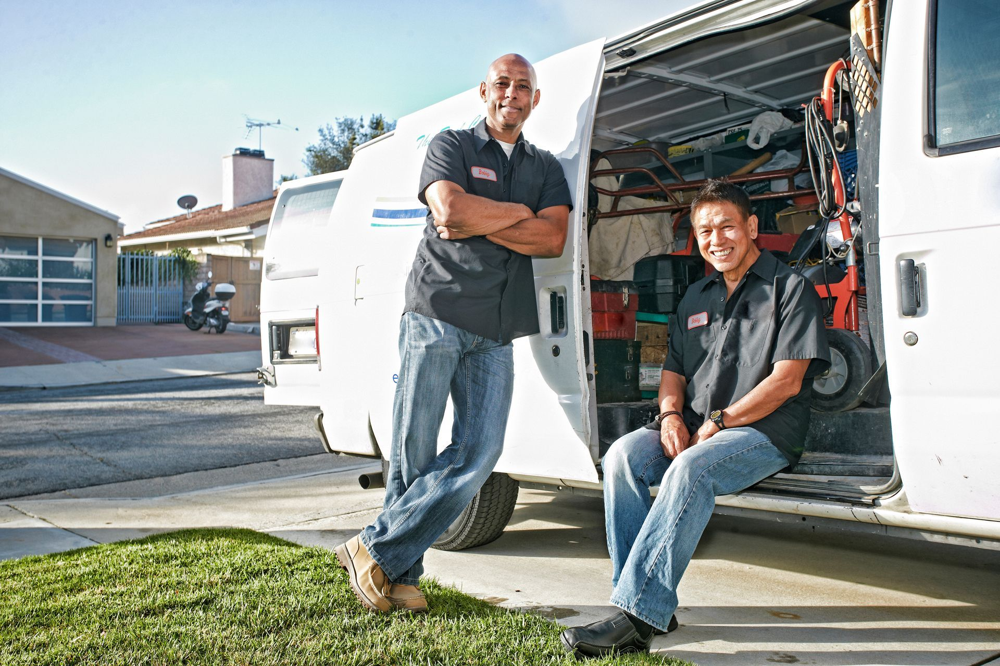

Trusted Plumbers in Garland, TX
Speake's Plumbing, Inc. is a trusted name in residential plumbing contractors serving Garland, TX, and surrounding communities. Founded in 1987, this Garland-based company brings decades of hands-on experience to every job. Call 972-271-9144 today or contact the team to schedule service.
Speake's Plumbing, Inc. provides licensed professionals in Garland, TX, for a wide range of home and business plumbing needs. Every visit is handled by a licensed professional, and the team includes master plumbers with the training to tackle complex jobs correctly the first time.
What Sets Speake's Plumbing Apart From Other Plumbers?
Licensed professionals show up to every job, no exceptions. Speake's Plumbing, Inc. employs nine licensed technicians, including three master plumbers, and runs eight fully stocked vans so technicians arrive ready to work. The company has been locally owned and operated in Garland, TX, since 1987, building a reputation rooted in honesty and fair pricing. Every customer's service history is tracked, which can help identify patterns and prevent repeat problems down the line.
Services may include:
- Drain cleaning and clog removal.
- Pipe repair and pipe replacement.
- Water heater repair and installation.
- Sewer line service and repair.
- Garbage disposal sales and installation.
- Faucet and fixture replacement.
What to Expect When You Call Our Plumbers in Garland
- Call 972-271-9144 or submit a request through the contact page to describe your plumbing issue.
- A team member schedules your appointment during available hours, Monday through Friday, 7:00 AM to 5:00 PM.
- A licensed technician arrives in a fully stocked service van, ready to assess and address the problem.
- The technician completes the repair or installation and reviews the work with you before leaving.
- Your service record is logged for future reference, helping the team serve you faster on any return visits.
Residential and Commercial Plumbing Services in Garland
Speake's Plumbing, Inc. handles both residential plumbing and commercial plumbing needs across the Garland area. Whether it is a clogged drain at home or a water heating issue at your business, the team is prepared.
Call 972-271-9144 or visit the contact page to book your appointment.
